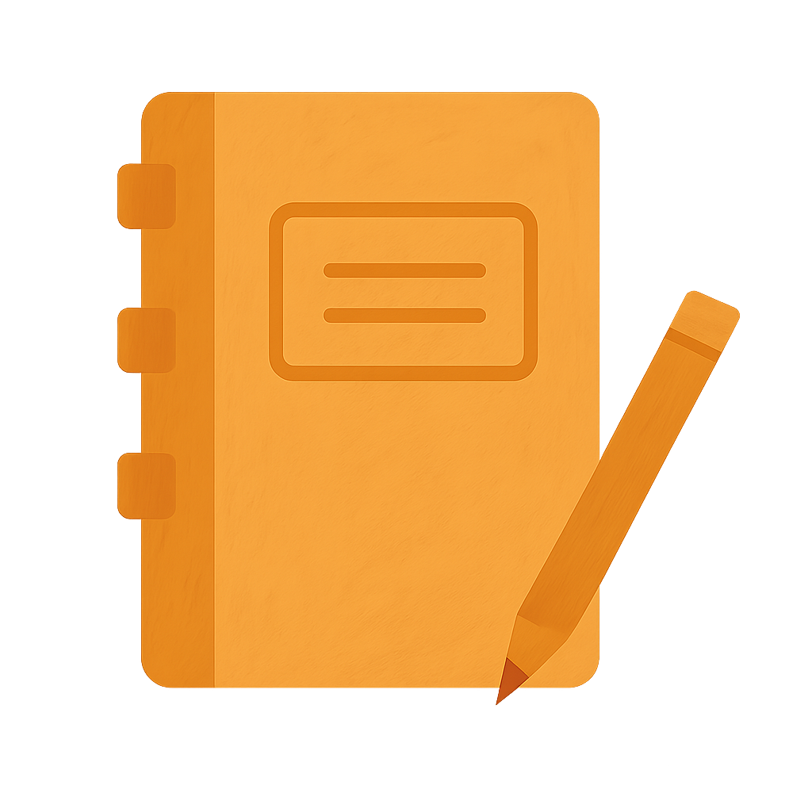

Медитація

Щоденник снів
Символи сновидінь
Медитація
Щоденник снів
Символи сновидінь
Цей розділ відкриває курс, занурюючи нас у атмосферу нічного спокою та мрій.

Цей розділ знайомить нас із символічним образом провідника, що веде крізь світ сновидінь.